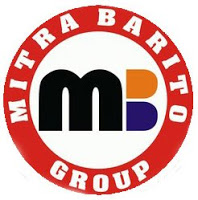
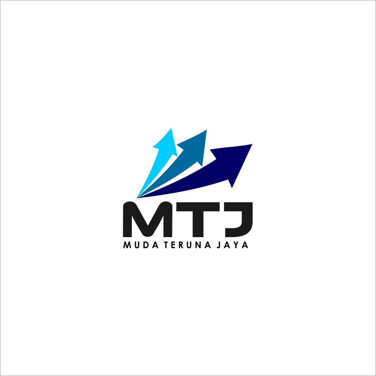

Rekanan

- 
- 
PT. heri g.t Sekitar tahun 1962, nama Pabal AD diubah menjadi Perindustrian TNI Angkatan Darat (Pindad). Tahapan pengembangan di era Pindad lebih berfokus pada tujuan pembinaan yang disesuaikan dengan prinsip-prinsip pengelolaan terpadu dan kemajuan teknologi mutakhir. Proses produksi Pindad pun dilakukan untuk mendukung kebutuhan TNI AD. Serangkaian percobaan dan evaluasi pembuatan senjata baru pun dilakukan dan menghasilkan berbagai Surat Keputusan dari Angkatan Bersenjata untuk memakai senjata Pindad sebagai senjata standar mereka. Setelah itu, senjata pun diproduksi secara massal. Pada awal tahun 1972, pemerintah Indonesia melakukan penataan departemen, termasuk Departeman Pertahanan dan Keamanan (Hankam). Karena itu Pindad pun berubah nama menjadi Kopindad (Komando Perindustrian TNI Angkatan Darat) pada tanggal 31 Januari 1972. Perubahan terjadi hanya pada komando utama pembinaan yaitu unsur penyelenggara kepemimpinan dan pengelolaan kebijakan teknik. Reorganisasi ini berdampak positif terhadap kinerja yang semula dianggap lamban menjadi lincah, bergairah dan dinamis. Dan Pusat Karya yang dirubah menjadi PT Purna Shadana (Pursad) memiliki keleluasaan untuk meningkatkan produksi kekaryaan untuk mendukung swasembada dan mengurangi ketergantungan terhadap luar negeri. Pada saat Operasi Seroja TNI-AD untuk pembebasan Timor Timur dari penjajahan Portugal persenjataan Pindad banyak mengalami kendala di lapangan sehingga pada tahun 1975 Kopindad menarik kembali sebanyak 69.000 pucuk senjata yang telah diserahkan kepada TNI-AD. Selanjutnya Kopindad melalukan transformasi dan modifikasi terhadap beberapa senjata antara lain SMR Madsen Setter MK III Kaliber 30mm long menjadi SPM.1 kaliber 7,62mm yang diproduksi sebanyak 4.550 pucuk dan membuat desain senjata senapan SS77 Kaliber 223. Dalam perkembangan selanjutnya, sebagai realisasi Keputusan Menteri Pertahanan dan Keamanan/Panglima Angkatan Bersenjata No. Kep/18/IV/1976 tertanggal 28 April 1976 tentang Pokok-pokok Organisasi dan Prosedur Tentara Nasional Indonesia Angkatan Darat nama Kopindad dikembalikan menjadi Pindad. Pindad berubah dari komando utama pembinaan menjadi badan pelaksana utama di lingkungan TNI-AD. Seiring perubahan tersebut Pindad diharapkan dapat mengembangkan kemampuan teknologi dan produktivitasnya dalam memenuhi kebutuhan logistik TNI-AD sehingga mengurangi ketergantungan pada luar negeri. Selain itu diharapkan juga dapat mengembangkan sarana prasarana non-militer yang dapat menunjang pembangunan nasional di bidang pertanian, perkebunan, pertambangan, industri dan transportasi baik untuk instansi pemerintah, swasta maupun masyarakat luas.
Menjadi produsen peralatan pertahanan dan keamanan terkemuka di Asia pada tahun 2023, melalui upaya inovasi produk dan kemitraan strategik.Melaksanakan usaha terpadu di bidang peralatan pertahanan dan keamanan serta peralatan industrial untuk mendukung pembangunan nasional dan secara khusus untuk mendukung pertahanan dan keamanan negara.
Perwujudan gedot g.t Kinerja perusahaan dapat dilihat melalui berbagai macam variable atau indikator … Menurut Ikatan Akuntansi Indonesia (IAI, 1995), kinerja perusahaan dapat diukur dengan menganalisa dan mengevaluasi laporan keuangan
jl.kemuncut sesama 28
Phone : 085787129956
Fax : 0511 3363 411
Email : heri17796@gmail.com